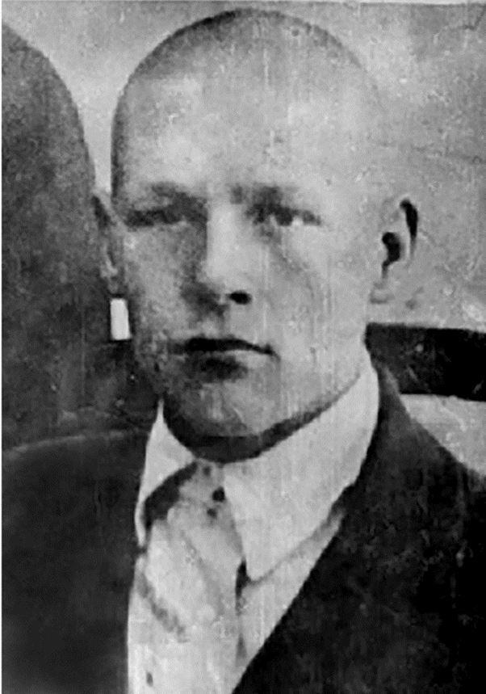
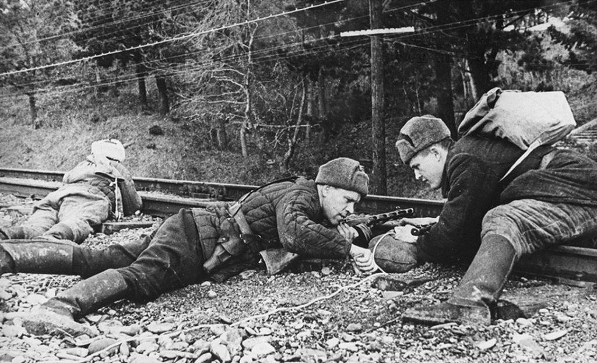
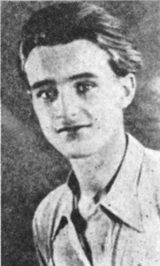
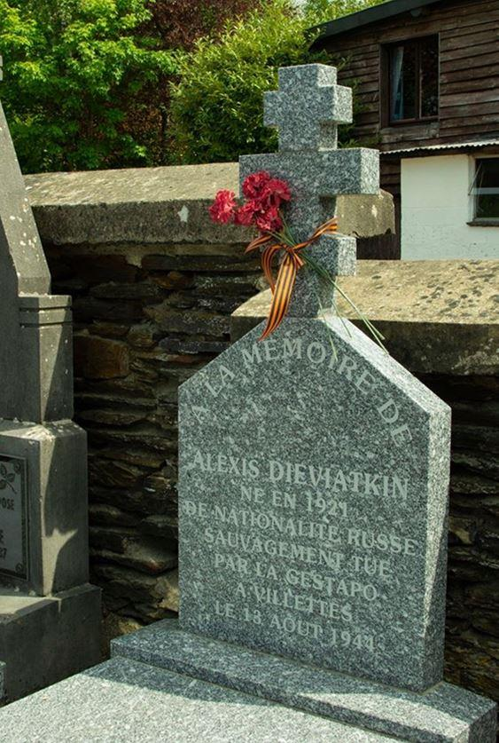

La guerre n'épargne personne. Elle surgit dans la vie de chacun, balayant la routine quotidienne. Chacun est alors prêt à jeter toutes ses forces dans la bataille pour protéger la Patrie de l'envahisseur, mais souvent cet héroïsme est cher payé. Les héros qui ont tout sacrifié pour un avenir meilleur méritent un souvenir éternel.
Ainsi, Aleksei Vladimirovitsh Devyatkin, né en 1921 dans le village de Vladimirovka, conducteur de tracteur, a été contraint de quitter son emploi et de prendre les armes. En 1941, il est enrôlé dans l'armée, mais est rapidement blessé et fait prisonnier. Devyatkin a été envoyé travailler dans les mines de charbon en Belgique, d'où il a réussi à s’évader pour rejoindre les mouvements de Résistance dans les Ardennes.
Devyatkin a combattu avec des partisans de la brigade « Pour la Patrie » (За Родину). Cette brigade a été formée en 1943 par d'anciens prisonniers de guerre soviétiques évadés des camps.
Les partisans ont combattu les nazis et étaient souvent en première ligne. À l’actif de la brigade « Pour la Patrie », on compte des dizaines de véhicules ennemis détruits, plusieurs dépôts de munitions dynamités, plus d'un millier de wagons immobilisés par des kilomètres de rails sabotés. Au cours de l'existence de la brigade, les rangs des partisans se sont rapidement reconstitués, aux citoyens soviétiques se sont ajoutés des Polonais et des Tchèques.
Alexei Devyatkin est éclaireur et se bat courageusement contre les nazis. Il accompli de nombreux exploits, grâce auxquels, il a réussi à mettre en déroute les patrouilles allemandes dans cette partie de la province de Liège. Il a également fait sauter deux ponts stratégiques pour l’occupant et a arrêté un convoi militaire.
Une mission en 1944 fut la dernière pour Devyatkin.
Alexei a servi dans le groupe de Jean-François Collard1. Au cours de la retraite des nazis, Devyatkin et ses camarades ont été envoyés en reconnaissance dans le village de Trou de Bra2. Le reste du détachement est resté en embuscade. Téméraire, Devyatkin est entré seul dans le village. Sur la place, il s’est retrouvé encerclé par des soldats allemands : il avait été dénoncé par un collaborateur. Les nazis voulaient faire parler le partisan sur l'emplacement et les effectifs de son détachement. Cependant, Devyatkin, vendant cher sa peau, a réussi à tirer six coups de revolver et à blesser plusieurs ennemis. Les Allemands ont immédiatement riposté, ne lui laissant aucune chance.
Mortellement blessé, Devyatkin a été traîné dans le café du village et interrogé sous les yeux des clients terrorisés. Cependant, il n'a donné aucune information. Sachant que des renforts étaient déjà en route, il a gagné du temps.
L'officier de la Gestapo, énervé par le comportement du maquisard, lui a tiré dans la tête l’entièreté du chargeur de sa mitraillette. Dès que les coups de feu ont retenti et que le reste du détachement, qui était en embuscade, est entré dans le village, les Allemands se sont repliés, laissant Trou de Bra aux mains les partisans.
Le courage désintéressé de Devyatkin, qui, au prix de sa vie, a réussi à libérer les habitants du village de Trou de Bra des nazis, restera à jamais dans la mémoire des gens. Sa tombe se situe au cimetière de l'église, dans le proche village des Villettes. Il contribua autrefois à libérer des Allemands le territoire de cette commune de la province de Liège.
Les habitants ont veillé à ce que le héros soit enterré avec honneur. Sur la tombe de Devyatkin, une pierre tombale en béton ornée d’une croix orthodoxe est dressée. Le texte en français est gravé sur la pierre tombale : « À la mémoire de Alexis Devyatkin, né en 1921, de nationalité russe, sauvagement tué par la Gestapo à Villettes le 13 août 1944 ». Le souvenir de l'exploit, du destin tragique d'Alexei Dieviatkin vit dans le cœur des habitants des régions qu'il a libérées. Cependant, le monde entier doit connaître le héros, qui, sans crainte, regardait l'ennemi en face, n'a pas donné ses camarades et s'est battu jusqu'à son dernier souffle. Soixante-seize ans se sont écoulés depuis sa mort, mais l'exploit n'a pas été effacé par le passage du temps. Au fil des ans, la valeur de son sacrifice ne fait que croître, car il a contribué à assurer un avenir de liberté et de paix et aux générations futures.
De nos jours, il y a encore des héros du passé, des soldats dont les noms ont été oubliés pour l'Histoire, des héros qui ont sauvé des milliers de vies, mais dont les exploits ont été oubliés. Lentement, peu à peu, en recueillant des informations, nous apprenons leur héroïsme, leurs sacrifices et leurs luttes. La mémoire des défenseurs disparus de la Patrie ne peut pas être perdue dans le passé. Le devoir des descendants est d'honorer les héros inconnus, de faire des efforts pour qu'ils ne soient plus oubliés.
E.A.K.
NOTE ET SOURCES
1. Jean(-François) Collard (1923-1944). Commandant du 4e Régiment des Partisans Armés du Front de l’Indépendance d’Ourthe et Amblève. Il se fait sauter avec une grenade plutôt que de se rendre (n.d.t.)
Partager cette page